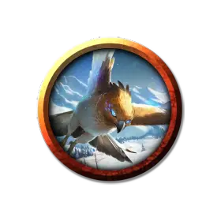

Валенарский ястреб
Valenar Hawk
Крошечная Фея, нейтральная

Класс Доспеха 14 (природный доспех)
Хиты 10 (4к4)
Скорость 10 футов, летая 60 футов
| мод | спас | ||
|---|---|---|---|
| СИЛ | 8 | −1 | −1 |
| ЛОВ | 18 | +4 | +4 |
| ТЕЛ | 10 | +0 | +0 |
| мод | спас | ||
|---|---|---|---|
| ИНТ | 9 | −1 | −1 |
| МДР | 16 | +3 | +3 |
| ХАР | 11 | +0 | +0 |
Навыки Восприятие +5
Чувства пассивное Восприятие 15
Языки Общий, Сильван, Эльфийский
Опасность 1/8 (25 опыта)
Бонус мастерства +2
Особенности
Языки. Понимает Общий, Эльфийский и Сильван, но не говорит.
Привязанность. Ястреб может магическим образом установить связь с одним существом в радиусе 30 футов, которое может видеть, потратив 1 час для наблюдения за ним. Привязанность существует до тех пор, пока ястреб не установит связь с другим существом или пока существо не погибнет. Ястреб и существо могут общаться телепатически находясь на расстоянии, не превышающем 100 футов.
Острое зрение. Ястреб совершает с преимуществом проверки Мудрости (Восприятие), полагающиеся на зрение.
Действия
Когти. Рукопашная атака оружием: +6 к попаданию, досягаемость 5 фт., одна цель. Попадание: Рубящий урон 6 (1к4 + 4).
Опциональные правила
Опциональное правило: черты наследия. Любое валенарское животное, будучи воплощением духа, может быть немного изменено при помощи сверхъестественного дара. Выберите черту или совершите бросок по таблице Черты наследия.
Наследственные черты.
| к8 | Черты |
| 1 | Дар удачи (1/день). Бонусным действием животное может выбрать одно существо, которое может видеть в радиусе 30 футов. Существо получает преимущество на следующий свой бросок атаки, спасбросок или проверку характеристики. Длительность эффекта – 1 час. |
| 2 | Всплеск скорости (Перезарядка 6). Бонусным действием животное может совершить рывок. |
| 3 | Камуфляж. Животное получает преимущество на проверки Ловкости (Скрытность), пока находится вне помещения. |
| 4 | Детектор лжи. Если существо в пределах 15 футов лжёт, животное знает об этом. |
| 5 | Наследие фей. Животное получает преимущество на спасброски против очарования или испуга, а также не может быть усыплено магически. |
| 6 | Фейский шаг (1/день). Животное телепортируется на расстояние до 30 футов в видимое свободное пространство, со всем что оно несет или носит. |
| 7 | Быстрота (Перезарядка 6). Бонусным действием животное может совершить уклонение. |
| 8 | Скрытный шаг. Животное невозможно выследить, кроме как магическими средствами, и оно не оставляет следов. |
Описание
Эльфы Валенара говорят, что когда их предки сражались с великанами Ксен`Дрика, эльфийские друиды принимали облик животных на поле боя. Жестокий и могущественный император великанов Кульсир наложил проклятие на друидов и заключил их в ловушку – в телах животных. Точно так же, как предки Валенар сопровождают своих воинов в битве, духи этих друидов могут пробудить силу в животном, чтобы создать компаньона, достойного чемпиона. Валенарские животные обладают высоким интеллектом и пробуждаются прикосновением духа предков.
Традиционно, животные Валенара выбирают эльфов Валенара в качестве компаньонов, отражая связь между предками эльфа и животного. Быть избранным Валенарским животным - большая честь, и к любому такому эльфу относятся с уважением и почтением. Тем не менее, в тех редких случаях, когда животное Валенара выбирает себе в компаньоны авантюриста другого происхождения к этому относятся нормально